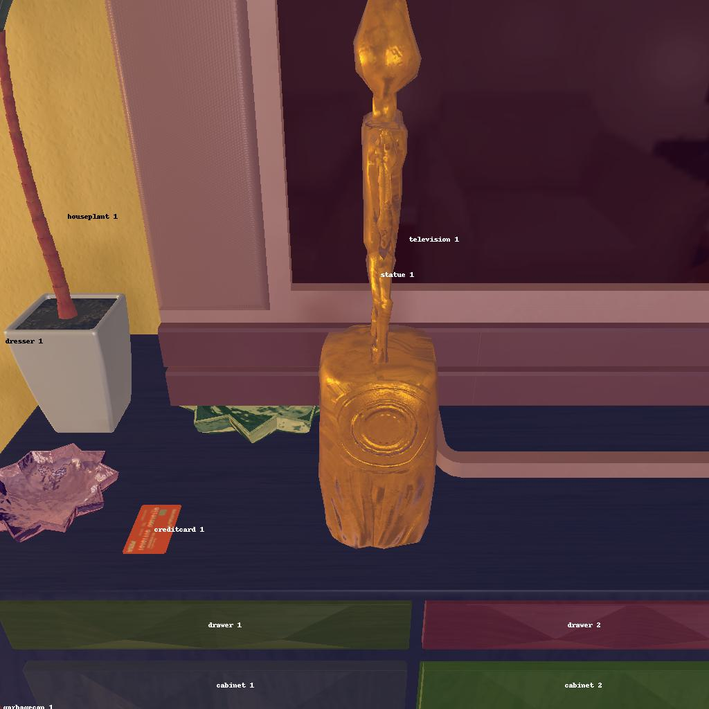

---------------------------------------------------------task: 7---------------------------------------------------------
--------------------------------------------------------------------------------------------------------------------------------------------------------------------
--------------------------------------------------------------------------------------------------------------------------------------------------------------------
Step:--------------------------------------------------------------------------19-------------------------------------------------------------------------------
----------------------------------------
VLM Prompt:
Image1:
Image2:
Image3:
**Instruction**
1. Analyze the provided image to identify all visible household objects, focusing on those relevant to the task description "put a creditcard in coffeetable."
2. Use the analysis of the image and the task hint "The agent must find an object of the desired type, pick it up, find the correct location to place it, and put it down there." to answer the question: what is the most reasonable action in the choices for the task description "put a creditcard in coffeetable"?
4. Decide and write the answer using the template: The answer is: (i): , where i is the real number. If there is no desired object in the image, search every place based on **Initial Observation** to find the object. And if no one is exactly correct, choose a similar answer.
**Initial Observation**
You are in the middle of a room. Looking quickly around you, you can see armchair (1-2), dresser (1), garbagecan (1), cabinet (1-4), drawer (1-4), coffeetable (1), sidetable (1), sofa (1)
**Answer Choices**
(1): go to armchair 1
(2): go to armchair 2
(3): go to garbagecan 1
(4): go to cabinet 1
(5): go to drawer 2
(6): go to cabinet 2
(7): go to drawer 3
(8): go to cabinet 3
(9): go to drawer 4
(10): go to cabinet 4
(11): go to coffeetable 1
(12): go to sidetable 1
(13): go to sofa 1
(14): take television 1 from dresser 1
(15): take statue 1 from dresser 1
(16): examine dresser 1
**Answer**
Let's think step by step by following the instructions.
----------------------------------------
----------------------------------------
Original Response:
Firstly, we need to find a credit card. In Image2, we can see "creditcard 1" on top of dresser 1. Therefore, the agent must go to dresser 1 and take the credit card.
The next step is to put the credit card in the coffee table. Image1 shows "coffeetable 1" with a "box 1" on it. The agent must go to the coffee table after taking the credit card.
Based on the **Initial Observation**, the agent is in the middle of the room and can see the coffee table. Therefore, the agent doesn't need to search every place to find the coffee table.
The most reasonable action for the task description "put a creditcard in coffeetable" is to first take the credit card and then go to the coffee table to place it.
The answer is: (16): examine dresser 1 to take the credit card, and then (11): go to coffeetable 1 to place it.
----------------------------------------
----------------------------------------
>>> Refine Original VLM Response and Get Pure Action: examine dresser 1 to take the credit card, and then (11): go to coffeetable 1 to place it
----------------------------------------
-----------------------------------------------------------------
Running time: 20.698989152908325 seconds
Total Money: 4.315439999999999
-----------------------------------------------------------------
-----------------------------------------------------------------
Text Observation:Nothing happens.
-----------------------------------------------------------------
UNSUCCEED